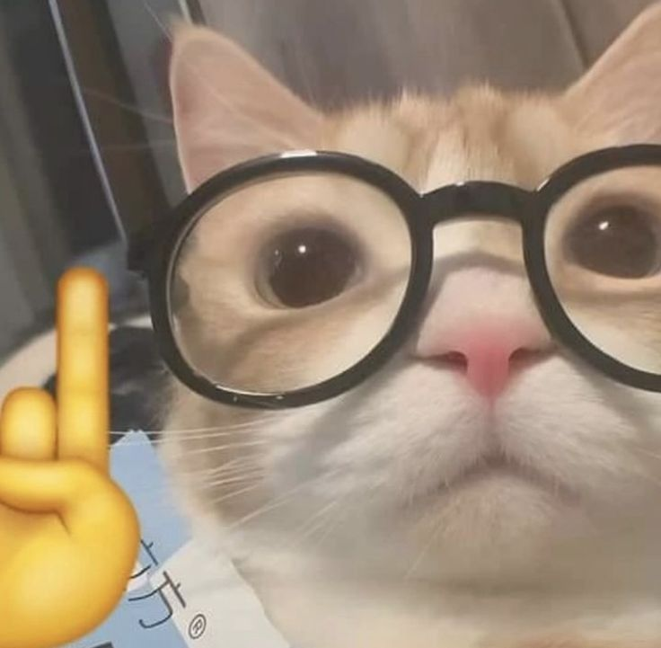

Sudah Bertahan Dari Tahun 2022,Dan Dulu Kita Belum Mengenal Satu Sama Lain (Seblum 2022),Dan Ketika Sebuah Server Minecraft Yaitu LuckyNetwork Di Sebuah Mini Games Kita Bertemu Dan Saling Kenal Satu Sama Lain Dan Menjadikan Lah Sebuah Team Yang Bernama "Netrals" Atau Lebih Di Kenal Netrals Community
Jangan Lupa Join Server Discord Nya WAK!!✨